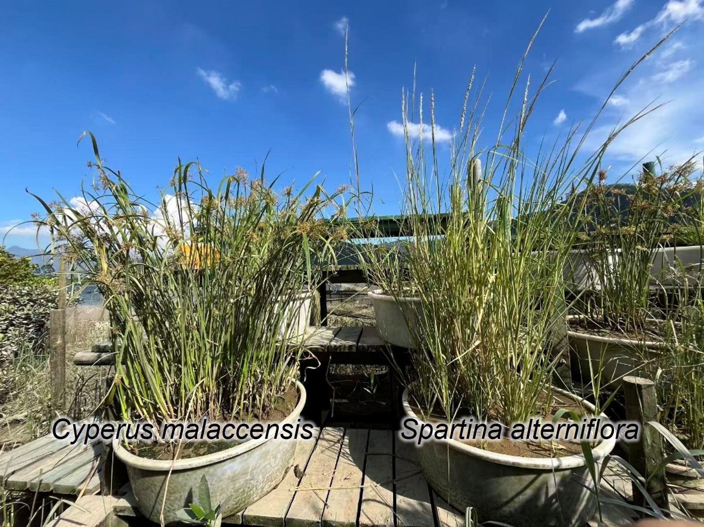
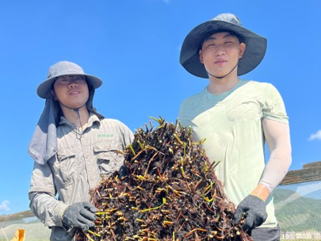

Biomass harvesting and clonal traits measuring of salt marshes finished in Zhangjiang Estuary
After one growing season, the marsh organ experiment of native Cyperus malaccensis and invasive Spartina alterniflora finally completed by our group members in Yunxiao, focusing on the clonal formation process from one seed to a clonal patch.
In the end of 2022, Chinese government carried out a large-scale elimination and control of the invasive species Spartina alterniflora to protect and restore the coastal wetland ecosystems. It is mainly controlled in physical ways like digging and burying. These solutions are quite effective in the short term and even the the northern China. However, from our continuous monitoring of the plant dynamic, we found that the weed grows back immediately in southern China.
In our previous research we found that Spartina mainly reproduce by seed in northern China while mainly by asexual clonal ways in the south. Surprisingly from our field observation, we notice that one of the native salt marsh Cyperus malaccensis clusters co-occurred with Spartina in the mudflat naturally. we just realized that clonal growth could be the key roles to explain what’s happening in the tree-grass ecosystem in southern China.
We cultivated the seedlings of Cyperus and Spartina from seeds in spring and transplanted into the center of the mesocosm, which is a 80 cm diameter by 30 cm depth of the plastic bucket. At the end of the growing season, we harvested plants when the fastest spreading clones began to encounter the wall of the bucket. During the experiment, we have measured the clonal and bud bank traits including lateral spread, multiplication rate and bud bank size, we also chose the representative rhizome and measured its morphology.

